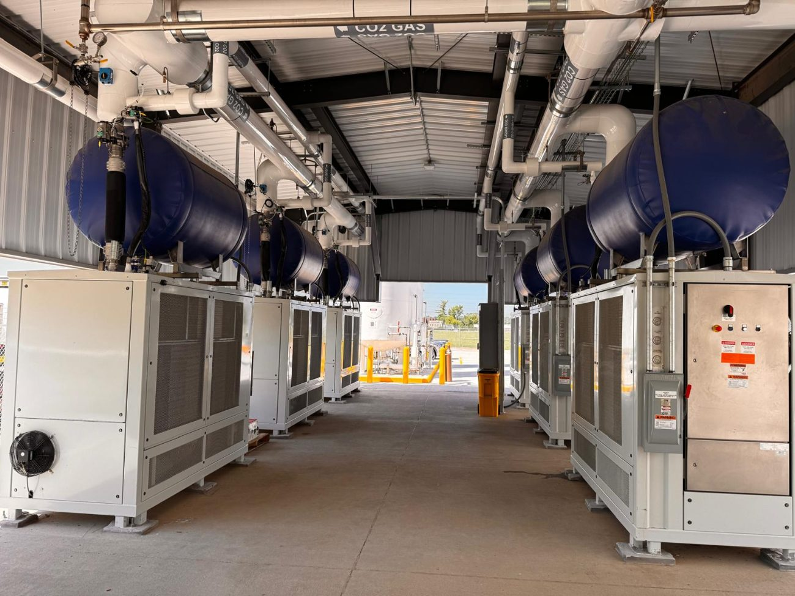
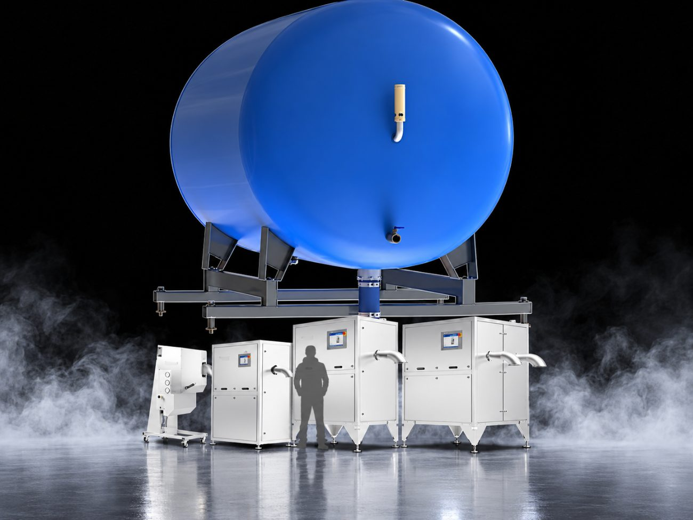
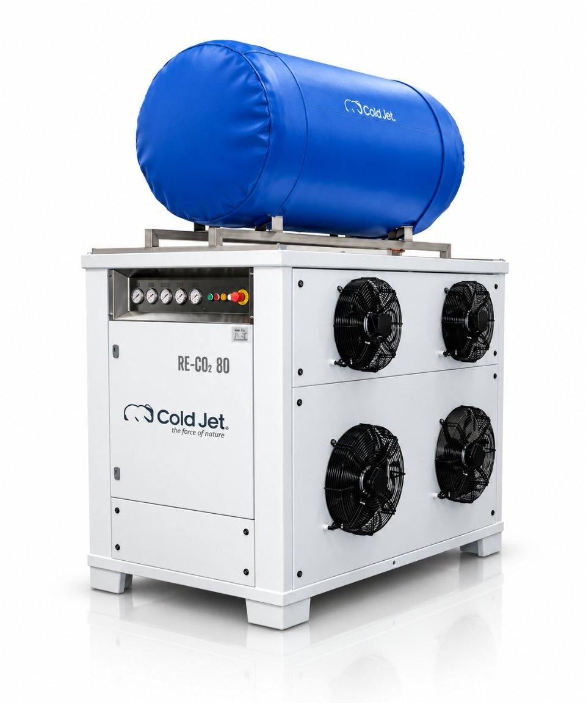
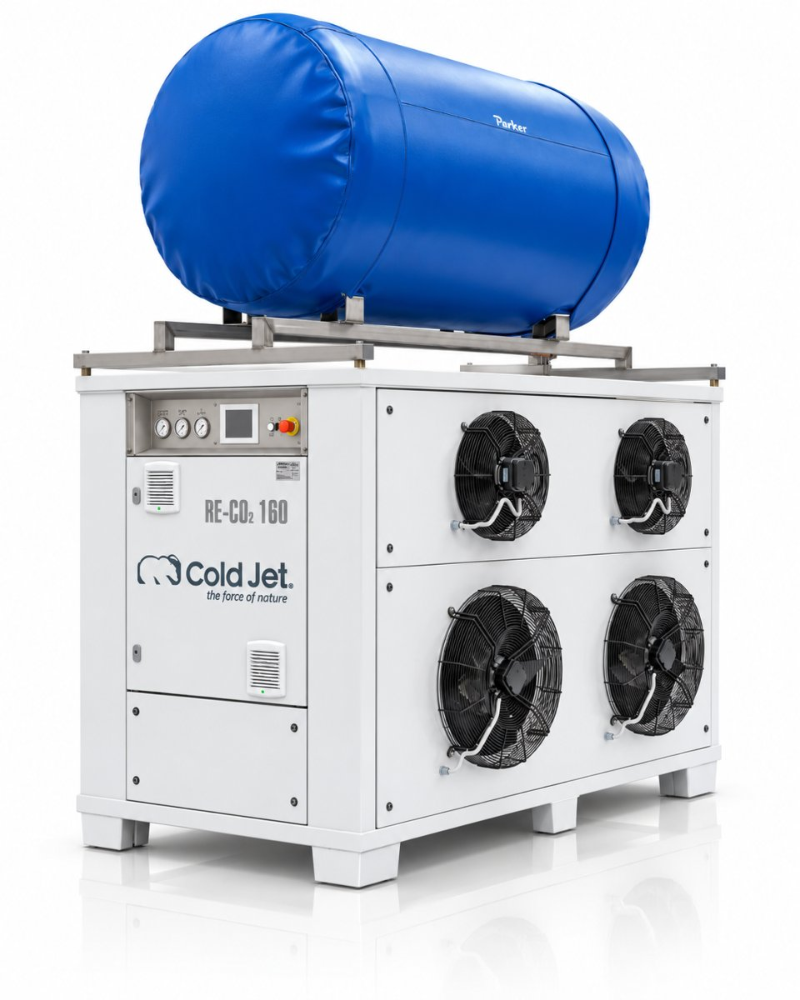
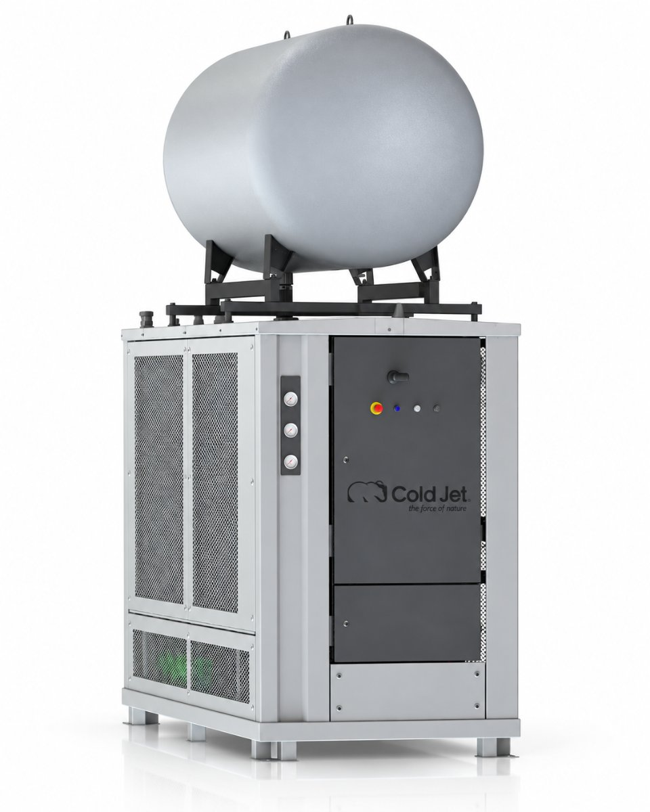
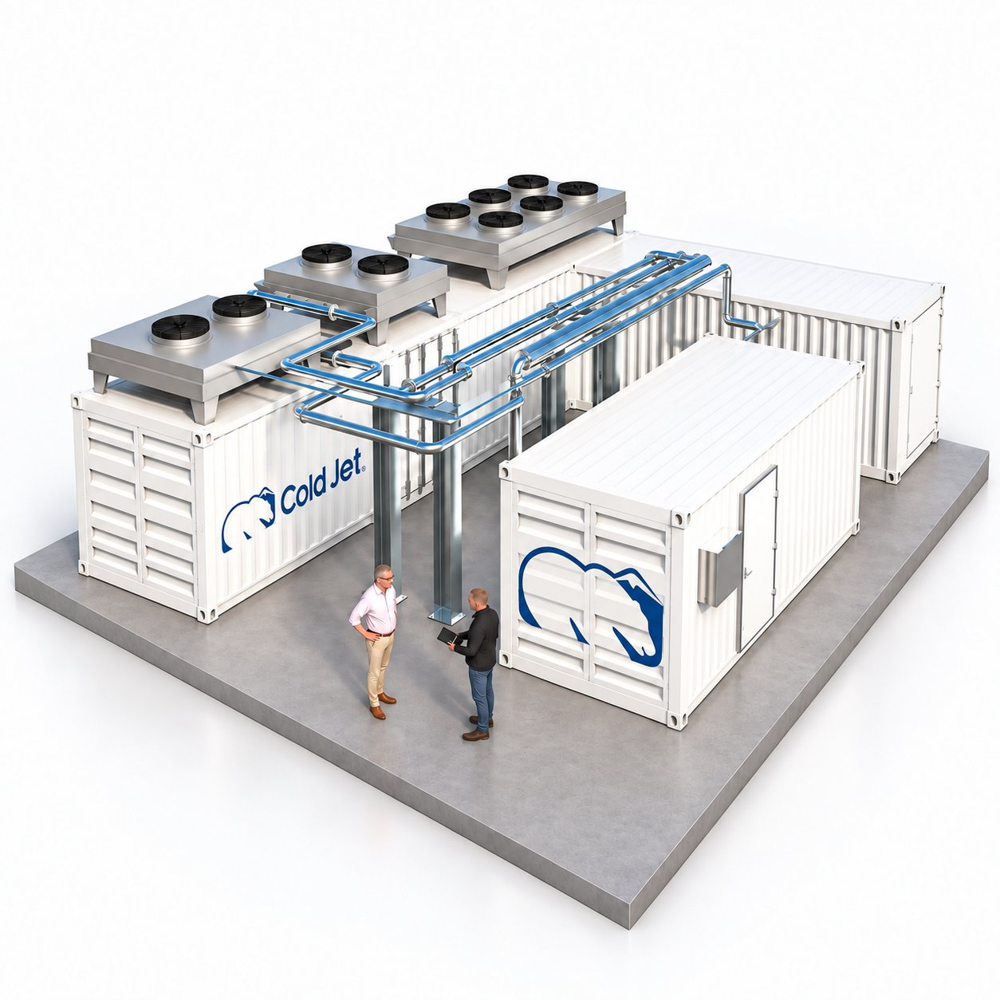

폐회로 방식의 안정적인 품질
외부와 섞이지 않는 폐회로 안에서 재액화되어, 회수된 CO2의 품질이 항상 일정합니다.
드라이아이스 생산 과정에서 기체로 빠져나가는 CO2를 포집하고 다시 액화해 펠렛타이저로 돌려보냅니다. 같은 원료에서 더 많은 드라이아이스를 생산하는 폐쇄형 순환 시스템입니다.
펠렛타이저에서 LCO2를 대기압으로 낮추면 약 절반은 드라이아이스 스노우가 되고, 나머지 절반은 가스가 되어 배출됩니다. RE-CO2 리커버리 시스템은 이 리버트 가스를 포집해 다시 액화하고, 펠렛타이저로 되돌려 보냅니다.
리버트 가스를 회수해 다시 펠렛으로 만들면 드라이아이스 생산 비용을 최대 40%까지 낮출 수 있습니다. 모듈식 설계와 여러 단계의 액화 용량으로 현장 규모에 맞게 구성하며, Cold Jet 펠렛타이저는 물론 통합 블라스팅 시스템과 대부분의 타사 펠렛타이저에도 연결됩니다.
RE-CO2는 CO2를 회수하는 장비를 넘어, 생산 현장에서 흔들림 없이 운전하도록 설계된 시스템입니다.
RE-CO2는 제어·냉각·배관·전기 계통까지 하나의 시스템으로 설계해, 생산 현장에서 흔들림 없는 성능을 유지합니다.
폐회로 구조로 회수된 CO2의 품질을 일정하게 유지하고, 강화된 내구성과 원격 진단 기능으로 장기간 안정적인 운전을 지원합니다.
외부와 섞이지 않는 폐회로 안에서 재액화되어, 회수된 CO2의 품질이 항상 일정합니다.
펠렛타이저의 PLC·HMI와 연동되어 리커버리 시스템이 유기적으로 운전됩니다.
배관·구동·전기 계통까지 유지보수성과 내구성을 고려해 현장 운전에 맞게 설계했습니다.
고온·실외 설치 조건까지 검증되었고, 원격 진단으로 빠르고 정확하게 대응합니다.
버려지던 CO2를 다시 생산에 활용해 원료 손실을 줄이고 생산 효율을 높입니다. 모듈식 구성으로 필요한 규모에서 시작해 확장할 수 있으며, 기존 드라이아이스 생산 설비에도 유연하게 적용할 수 있습니다.

드라이아이스 생산 중 대기로 배출되던 CO2를 회수해 다시 사용합니다. 실제 적용 현장에서는 동일한 양의 LCO2로 최대 70% 더 많은 드라이아이스를 생산한 사례도 보고되었습니다.

모듈식 설계로 생산 규모와 현장 조건에 맞는 리커버리 시스템을 구성할 수 있습니다. 필요한 용량으로 시작한 뒤 생산량이 증가하면 시스템을 단계적으로 확장할 수 있습니다.

Cold Jet 펠렛타이저는 물론 다양한 브랜드의 드라이아이스 생산 설비와 연동할 수 있습니다. 설치 공간이 부족한 경우에는 LCO2 탱크 인근의 외부 공간에 설치하는 구성도 가능합니다.
“CO2 비율이 2.4:1에서 1.35:1로 바로 개선됐습니다. 수익, 생산 능력, 회사 전체 성과가 크게 좋아졌습니다.”Richard Nimmons · Carbon Capture Scotland
시간당 80 kg부터 3,500 kg까지, 함께 운용하는 펠렛타이저의 생산 능력에 맞는 회수 용량을 고릅니다. 모델을 선택하면 상세 사양을 볼 수 있습니다.

PE 80 펠렛타이저와 짝을 이루는 소규모 자체 생산용 모델입니다.
모델 상세 보기 →
PR120H 펠렛타이저와 함께 구성하는 중소 규모 생산 라인용입니다.
모델 상세 보기 →
PR350H·PR750H와 짝을 이루며, 동급에서 가장 지능적이고 확장성 높은 리커버리 시스템입니다.
모델 상세 보기 →
PR750H 3대 이상을 운용하는 대형 생산 시설용 컨테이너형 자율 운전 시스템입니다. CO2(R744)를 냉매로 사용해 회수 톤당 에너지 소비가 가장 낮습니다.
모델 상세 보기 →현재 드라이아이스 생산량과 증설 계획을 선택하세요. 필요한 회수 용량에 맞는 RE-CO2 구성을 바로 확인할 수 있습니다.
일반적인 플랜트형 리커버리 시스템은 대형 중앙 설비 중심으로 구성되는 경우가 많습니다. Cold Jet RE-CO2는 드라이아이스 생산 공정과의 연동, 모듈형 확장, 설치 유연성과 유지보수·지원까지 고려해 설계한 리커버리 시스템입니다.
대형 중앙 설비 중심, 현장 맞춤 엔지니어링 비중이 큰 편
모듈형 설계, 필요한 규모에서 시작해 단계적으로 확장 가능
생산 설비와 별도로 구성되는 경우가 많아 연동 검토가 중요
펠렛타이저 배출 CO2를 회수해 다시 생산라인으로 재공급
전용 설치 공간과 배관 구성이 비교적 큰 편
공간이 부족하면 LCO2 탱크 인근 실외 설치 가능
증설 시 추가 설계와 공사 검토가 필요한 경우가 많음
여러 용량과 모듈식 구성으로 현장 조건에 맞게 선택 가능
현장 점검과 개별 유지보수 중심
V2 기준 원격 트러블슈팅 지원, 유지보수성과 대응성 개선
회수된 CO2의 활용 방식은 시스템 구성에 따라 달라짐
회수한 CO2를 재액화해 다시 드라이아이스 생산에 사용하는 폐회로 방식
※ ‘일반적인 플랜트형 리커버리’는 비교 이해를 돕기 위한 대표적 구성입니다. 실제 구성과 효과는 생산 규모, 설치 환경, 공급 조건에 따라 달라집니다.
Cold Jet이 전 세계 고객에게 가장 많이 받는 CO2 리커버리 질문을 정리했습니다.
기존 드라이아이스 생산 설비에 추가하는 장치입니다. 일반 생산 과정에서 사용되지 않고 배출되던 CO2 가스를 포집·회수해, 더 많은 드라이아이스를 만드는 데 다시 사용합니다.
드라이아이스 생산 중 배출되던 LCO2의 최대 40%를 절약할 수 있습니다. 같은 양의 LCO2로 생산량을 늘리는 쪽으로 활용할 수도 있습니다.
현재 사용 중인 드라이아이스 생산 장비와 매끄럽게 연결되도록 설계되어 있으며, 추가 장비나 개조는 최소한으로 필요합니다. 대부분의 펠렛타이저 브랜드와 호환됩니다.
아니요. 재액화된 CO2는 밸브를 거쳐 펠렛타이저로 액체를 공급하는 배관에 합류합니다. 가스 공급사는 외부 물질이나 회수 CO2를 LCO2 탱크에 넣는 것을 엄격히 금지하고 있으며, RE-CO2는 이 규정을 지키면서 고품질 액체 CO2를 펠렛타이저에 지속적으로 공급합니다.
없습니다. 회수된 CO2 가스는 생산에 사용되는 LCO2와 같은 품질이며, 밀폐 순환 구조라 오염 가능성이 없습니다.
생산량과 CO2 사용량에 따라 다르지만, 많은 경우 12개월 이내에 투자를 회수합니다. 운영은 간단하고 유지보수도 최소한으로, 정기 점검만 권장됩니다.
펠렛타이저 모델과 시간당 생산량, 설치 공간만 알려주시면 적합한 RE-CO2 용량과 예상 절감 효과를 계산해 드립니다.
바테크는 Cold Jet 대한민국 공식 대리점으로 현장 검토부터 설치, 시운전, 교육과 A/S까지 전 과정을 지원합니다.